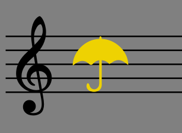

Working with images
Images may be inserted into scores by attaching them to score objects or to frames.
The supported image formats are SVG (*.svg), PNG (*.png), JPEG (*.jpg and *.jpeg).
- SVG is recommended for symbols and 2D graphics because it enables you to adjust the image size without pixelation.
- Transparency and gradients are supported.
- Advanced SVG features such as shading, blurring, clipping and masking are not supported.
- PNG also supports transparency and is preferable to JPEG for symbols and 2D graphics.
- Use PNG if you can't obtain an SVG version of the graphic.
- Don't try to convert PNG to SVG because this won't provide the benefits of a true SVG image.
- Consider using a free tool such as TinyPNG to reduce the PNG file size without reducing quality.
- JPEG is recommended for photographs and detailed 3D textures.
- Use it for 2D graphics only if you have no other option.
- Don't try to convert JPEG to SVG or PNG as this will increase file size without providing the benefits of those formats.
In addition, images saved in the Bitmap (*.bmp), and TIFF (*.tif and *.tiff) formats work but are not fully supported. It's best to convert these images to PNG or JPEG before importing into MuseScore Studio.
Other formats such as GIF (*.gif), WebP (*.webp) and X PixMap (*.xpm) are not supported. These images must be converted to PNG or JPEG before importing in MuseScore Studio.
Importing images
Add an image to a vertical or horizontal frame
This method doesn't work with Bitmap (*.bmp) or TIFF (*.tif and *.tiff) images.
- Right-click on the frame
- Select Add→Image
- Search for and add the image from the “Insert image” window.
Attach an image to a score object
Use this method for small images associated with staves, such as musical symbols, or for image formats not supported by the above method (e.g. Bitmap, TIFF).
- Locate the image file in your operating system's file manager (i.e. outside of MuseScore Studio).
- Shrink the file manager's window so it fits on the same screen as MuseScore Studio.
- Drag the image file from the file manager across to MuseScore Studio.
- Keep dragging until the cursor is positioned over a note, rest, measure, or a vertical or horizontal frame.
Saving images to palettes
To save an imported image to a palette, see Adding elements from the score.
Copying imported images
Once an image has been imported into the score it can be copied/cut and pasted to another location, such as a frame, note or rest, using the standard commands and procedure (see Copy and paste).
Adjusting images
Change image height/width
Select the image and use either of the following methods:
- Drag either of the image adjustment handles.
- Edit the “Image height/width” in the Image section of the Properties panel.
As long as the padlock symbol is active (coloured blue in Properties: Image) the aspect ratio (height/width) of the image will be maintained throughout. If you want to adjust a side independently of the other, click on the padlock to break it (coloured grey).
Scale image
To scale an image to the height of the containing frame:
- Adjust the frame to the desired height
- Check “Scale to frame size” in the Image section of the Properties panel.
As long as “Scale to frame size” remains checked the image size will follow the frame height.
Adjust image position
The image can be repositioned by dragging, or adjusting the horizontal/vertical offsets in the Appearance section of the Properties panel. Ctrl+R restores the image to its default position.
Image properties
The image properties of a selected image can be adjusted in the Image section of the Properties panel.
- Image height / Padock / Image width: Adjust dimensions of image. The padlock, which is active by default, ensures that the desired aspect ratio (height/width) is maintained.
- Scale to frame size: See Scale image (above).
- Use staff space units: When checked (the default setting), the image automatically scales proportionally with the Scaling setting in Format→Page Settings, and uses the staff space unit, sp. If unchecked, the image uses mm and does not scale proportionally. See Page layout concepts.

\ _This symbol is 4sp in height so it fits perfectly into the space between the top and bottom line of a 5-line staff. Its "Use staff space units" option is checked so it scales proportionally._
See also
- Using the palettes for info on how apply palette items.